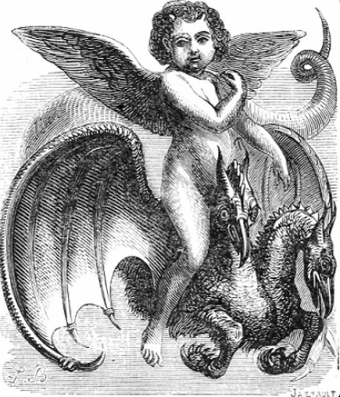

Romênia - Conventos
VALAC
Poderoso demônio dos grimórios, montado em um dragão.
Curiosidades
Origem nos grimórios: Diferente da famosa representação cinematográfica de freira, Valac (ou Volac) aparece em grimórios antigos de demonologia, como a Chave Menor de Salomão, descrito como um presidente poderoso do inferno.
Forma original: Nos textos tradicionais, ele é retratado como um menino anjo com asas de anjo montado em um dragão de duas cabeças.
Poderes clássicos: A crença antiga diz que ele tem o dom de encontrar tesouros verdadeiros e revelar onde estão escondidas serpentes perigosas.